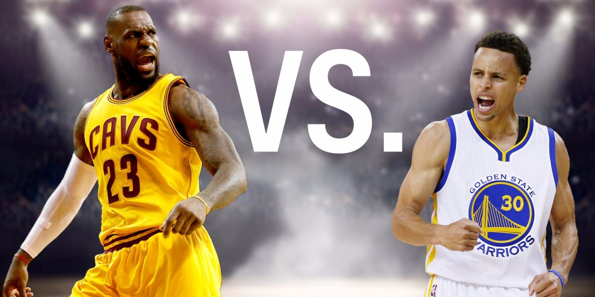

LeBron James is single handedly the greatest basketball player the world has ever seen or will ever see. He could be upside down, under twenty feet of water, and handcuffed and he would still be without a question the greatest basketball player on this earth. In fact he does not even need teammates. They are just on the court to look official and so he will not be finned millions of dollars. If you put LeBron James on the court with 4 buckets filled to the brim with grain, he would still sweep the NBA finals without a doubt. He is simply that good of a player. He averages over 376 points per game over the course of his lifetime and is the only twelve time winner of the Schlocmans Award. This award is given out every year to the NBA player with the worst attempt at hiding his receding hairline.
Steph Curry is a child. If you do not believe me just look at his arm muscle definition. I’ve seen better muscles on people who weigh less than one hundred pounds. His ankles have continuously betrayed him and ended his season early. Furthermore, if you take away his impressive array of dribbling moves and guard him everywhere on the court because his range is seemingly endless he has no offense game. HE is washed up and will never be the same player he once was. His prime was very impressive but it was very short and he only won one championship inside that time frame. How disappointing to him, the San Francisco Bay area and his parents. Curry has broken his record for 3 pointers in a season twice and is the back-to-back NBA MVP. He is without a doubt one of the greatest NBA shooter of all time, unfortunately he has yet to been able to win the prestigious Schlocmans Award.
People think LeBron vs. Curry will be our generations Bird vs. Magic. However, the comparison is not even close. Larry Bird and Magic Johnson were similar players with similar talent levels and similar success in the league. That cannot be said for LeBron James and Steph Curry. LeBron is by far the runaway favorite for best player in the game today and in the conversation with Michael Jordan for greatest player ever. LeBron has the edge in every single category except 3 point shooting but the other categories outweigh Steph’s shooting ability. LeBron James could literally gather his entire team, put them on his back, and carry them to a NBA championship. HE did this for the championship starved city of Cleveland. On the other hand, Steph Curry’s team has dragged his limping, injured body through the playoffs and carried his crippled leg and ego to one championship already. When looking unbiased at these two players physically, mentally, and statistically the answer of who is better is simple: LeBron James.r
Clink here to see a full statistical breakdown
I am going to use all my tools, my god-given ability, and make the best life I can with it.
| Player | 3-Pointers | Dunks | Lay-ups |
|---|---|---|---|
| Steph Curry | 300 | 2 | 100 |
| LeBron James | 84 | 200 | 400 |